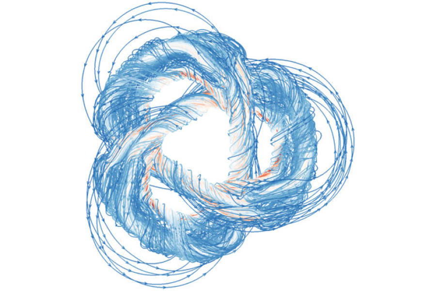
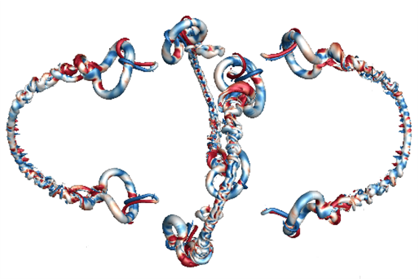
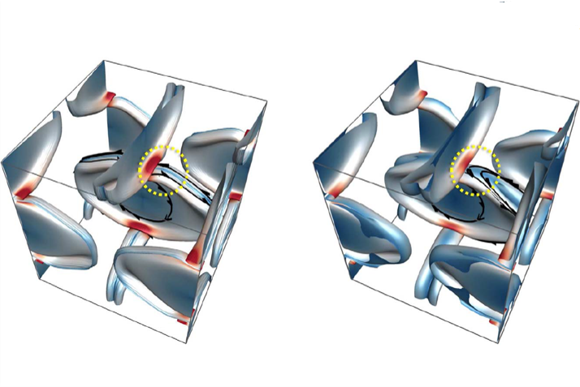
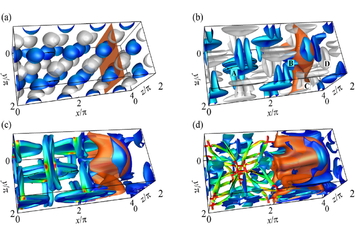

(Corresponding author *)


Yitong Deng, Mengdi Wang, Xiangxin Kong, Shiying Xiong, Zangyueyang Xian, and Bo Zhu
A moving Eulerian-Lagrangian particle method for thin film and foam simulation
ACM Transactions on Graphics (SIGGRAPH), 41, 154, 2022
[PDF]

Shanxin Ruan, Shiying Xiong, and Jiaping You, and Yue Yang∗
Generation of streamwise helical vortex loops via successive reconnections in early pipe transition
Physics of Fluids, doi: 10.1063/5.0094326
[PDF]


Rui Tao, Hongxiang Ren, Yunjin Tong, and Shiying Xiong*
Construction and evolution of knotted vortex tubes in incompressible Schrödinger flow
Physics of Fluids, 33, 077112, 2021 (Editor’s pick)
[PDF]



Shiying Xiong and Yue Yang*
Effects of twist on the evolution of knotted magnetic flux tubes
Journal of Fluid Mechanics, 895, A28, 2020
[PDF]

Shiying Xiong and Yue Yang*
Evolution and helicity analysis of linked vortex tubes in viscous flows
SCIENTIA SINICA Physica, Mechanica & Astronomica, 50, 040005, 2020 (in Chinese)
[PDF]

Shiying Xiong and Yue Yang*
Identifying the tangle of twisted vortex tubes in homogeneous isotropic turbulence
Journal of Fluid Mechanics, 874, 952-978, 2019 (Featured on cover)
[PDF]

Shiying Xiong and Yue Yang*
Construction of knotted vortex tubes with the writhe-dependent helicity
Physics of Fluids, 31, 047101, 2019 (Editor’s pick)
[PDF]

Jinhua Hao, Shiying Xiong, and Yue Yang*
Tracking vortex surfaces frozen in the virtual velocity in non-ideal flows
Journal of Fluid Mechanics, 863, 513-544, 2019
[PDF]

Hao Zhou, Jiaping You, Shiying Xiong, Yue Yang*, Dominique Thévenin, and Shiyi Chen
Interactions between the premixed flame front and the three-dimensional Taylor-Green vortex
Proceedings of the Combustion Institute, 37, 2461-2468, 2019
[PDF]

Yaomin Zhao, Shiying Xiong, Yue Yang*, and Shiyi Chen
Sinuous distortion of vortex surfaces in the lateral growth of turbulent spots
Physical Review Fluids, 3, 074701, 2018
[PDF]